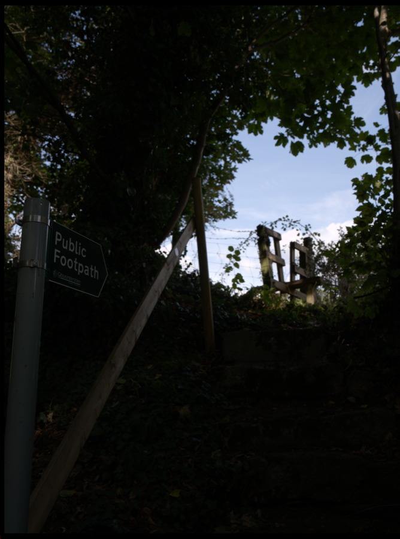
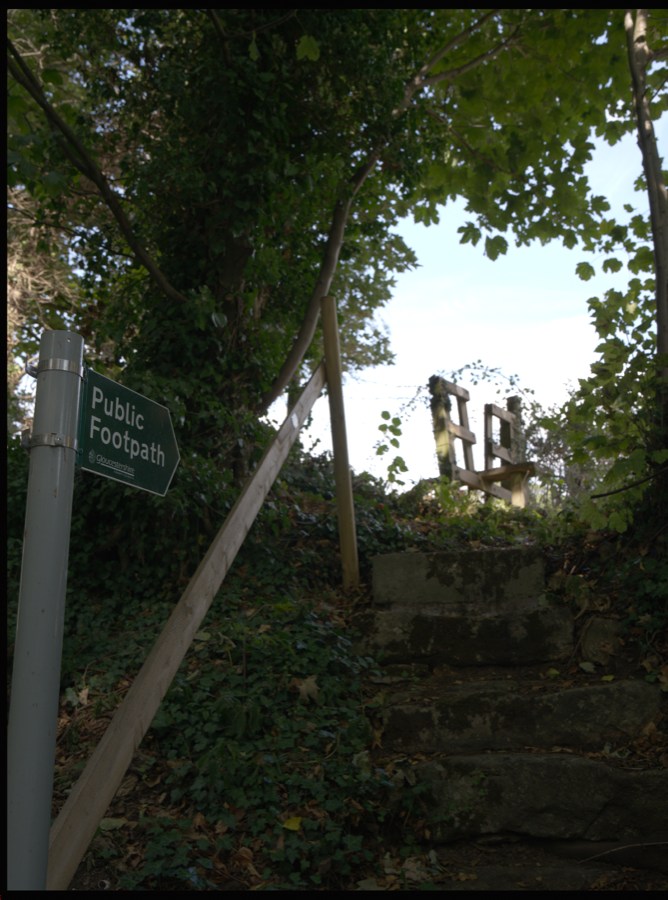

0.5%
Black floor
Ignores isolated dead pixels and tiny clipped regions. Black adjustment is capped at ±24.
Auto Balance is a conservative starting point derived from the rendered luminance distribution. It improves usability without forcing night scenes, silhouettes, snow, and high-key work toward the same exposure.
Ignores isolated dead pixels and tiny clipped regions. Black adjustment is capped at ±24.
The median guides exposure, but 20% of the photographed key is retained. Exposure is capped at ±1.75 EV.
A broad shoulder and the bright tail are blended. Small windows and speculars are protected without letting one hot pixel dominate.
render a neutral-tone preview using the active camera/profile pipeline → compute true per-pixel luminance histogram → estimate p0.5, p10, p50, p90, p99.5 → preserve 20% of the original scene-key displacement → add a bounded mid-shadow gamma lift only for genuinely backlit frames → set bounded exposure, brightness, blacks, shadows, highlights, whites, contrast → render once through the real pipeline


| Control | Auto range | Reason |
|---|---|---|
| Exposure | −1.75…+1.75 EV | Recover clearly off exposure without erasing intentional key. |
| Brightness | 0…+18 | Backlit-only gamma lift pins black and reference white while opening compressed mid-shadows. |
| Highlights | −36…0 | Recovery only when the blended p90/p99.5 probe is under pressure. |
| Shadows | −12…+26 | Open blocked areas gently; retain depth. |
| Whites / Blacks | −24…+14 / ±24 | Establish endpoints without pushing routine clipping. |
| Contrast | −5…+8 | Small compensation for unusually broad or flat central distributions. |